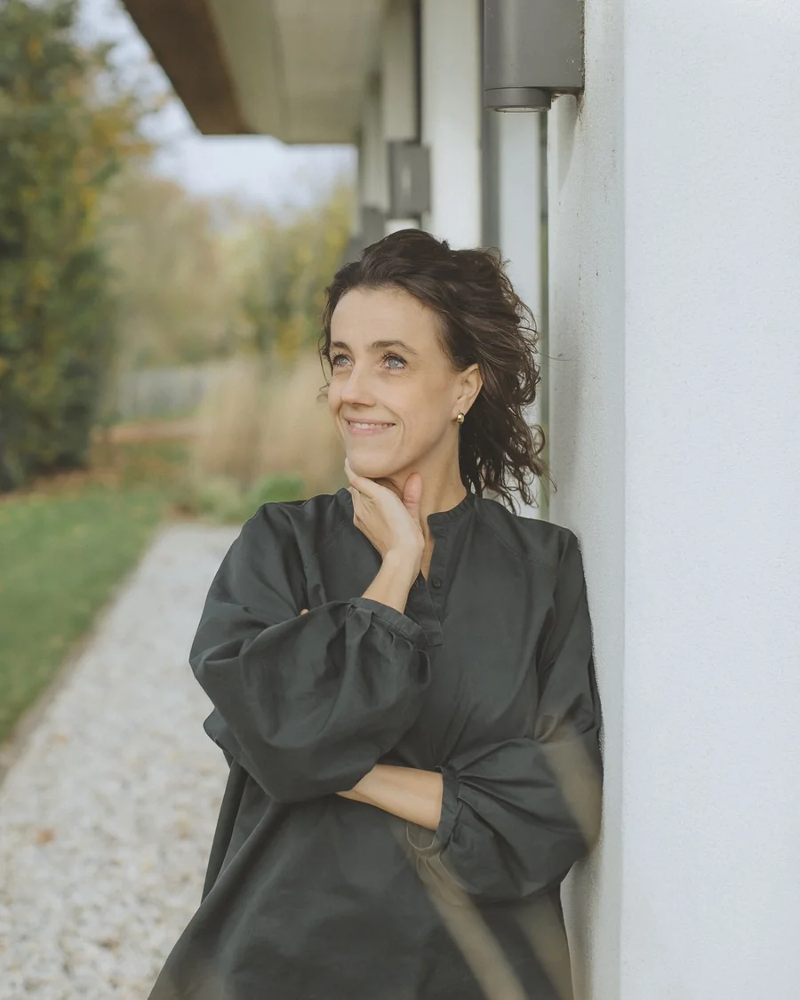

Arts voor integrale geneeskunde en leefstijlgeneeskunde · Amsterdam & online
Over Clementine
Niet alleen symptomen bestrijden, maar teruggaan naar de kern drijft mij. Met mijn achtergrond in geneeskunde, architectuur, Integrative Medicine en leefstijlgeneeskunde heb ik een brede kijk en combineer ik medische en systemische kennis en ervaring en intuïtie.
In mijn sessies creëer ik een veilige, oordeelloze setting waarin we samen onderzoeken wat voor jou betekenisvol is. Ik help je bewust te worden van jouw Backpack: alles wat je meedraagt. Alle lagen van gezondheid — fysiek, emotioneel, mentaal en spiritueel — kunnen hierbij betrokken worden. Je krijgt uitleg en praktische tips waarmee je direct aan de slag kunt. Daarnaast ontstaat er inzicht en ruimte om te voelen, waardoor vaak beweging ontstaat.
BIG-registratie: 89924263801

Achtergrond
Ervaring en opleidingen
- Jaartraining Weg van het Wiel — regressietherapie, Maarten Oversier (heden)
- Opleiding Systeemdynamieken in families, Bert Hellinger instituut (heden)
- From Womb to World, pre- en perinatale psychologie, Anna Verwaal (2025)
- Arts voor Integrative Medicine en leefstijlgeneeskunde (2024 – heden)
- Academy for Integrative Medicine en leefstijlgeneeskunde, basis- en verdiepingsjaar (2020–2023)
- Bouwkundig arts Cordaan: gezonde woonzorgomgevingen (2021–2025)
- Basisarts acute ouderengeneeskunde, de Wijkkliniek, Amsterdam UMC & Cordaan (2021–2022)
- Basisarts huisartsgeneeskunde (2020)
- Arts-onderzoeker ‘Ouderen langer zelfstandig thuis! Maar hoe dan?’ Ben Sajet Centrum Amsterdam (2020–2021)
- Healthcare consultant Royal HaskoningDHV (2018–2019)
- Geneeskunde, Universiteit van Amsterdam, bachelor en master (2013–2018)
- Bouwkunde, TU Delft, bachelor (2010–2013)
Zullen we kennismaken?
Twintig minuten, vrijblijvend en gratis. Je ontdekt of onze aanpak bij je past — en wij of we je verder kunnen helpen.
Plan gratis kennismaking →Weet je al bij wie je wilt zijn? Boek direct bij Clementine of bij Maaike.